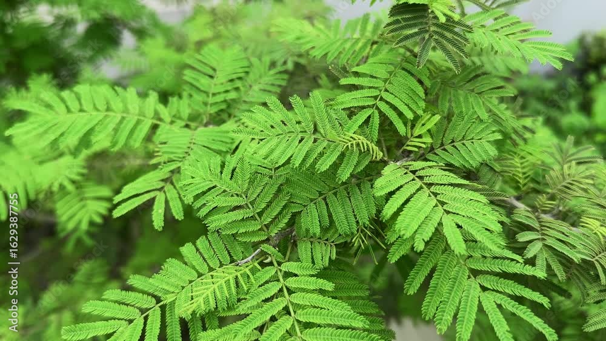
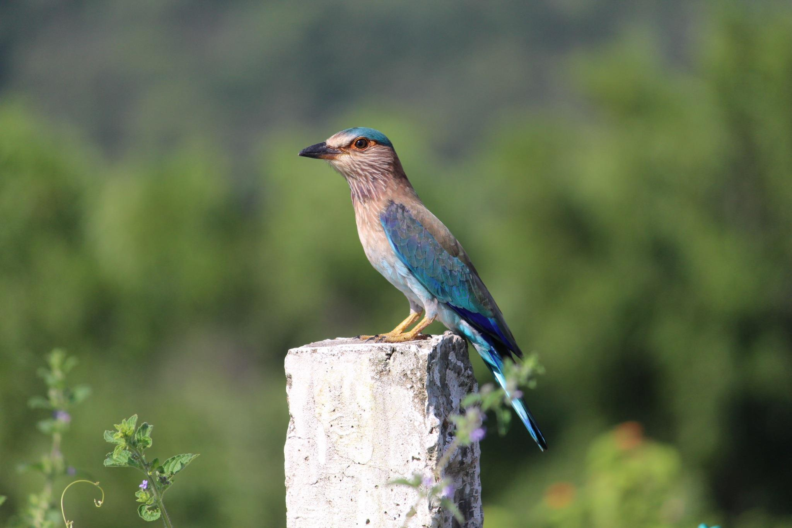

🌿 TELANGANA TRADITIONS 🌿
Mana Dasara – Mana Aachaaralu
Telangana Dasara is celebrated with beautiful traditions, cultural gatherings and age-old customs passed from one generation to another.

Ravana Dahanam
Dasara celebrations are marked by the symbolic burning of Ravana's effigy, representing the victory of good over evil.

Jammi Aaku – Bangaram
During Dasara, people exchange Jammi leaves as a symbol of affection, friendship and good wishes.
Alai Balai
Dasara brings people together through greetings, friendship and shared celebrations. Alai Balai represents the joyful spirit of meeting and exchanging warm wishes.

Palapitta
Palapitta, the Indian Roller, has a special cultural association with Dasara celebrations in Telangana.
🌿 DASARA SPECIAL TRADITION 🌿
Jammi Aaku – Bangaram
On Dasara, Jammi Chettu holds a special place in Telangana tradition. People worship the Jammi tree and exchange its leaves as a symbol of affection, friendship and good wishes.